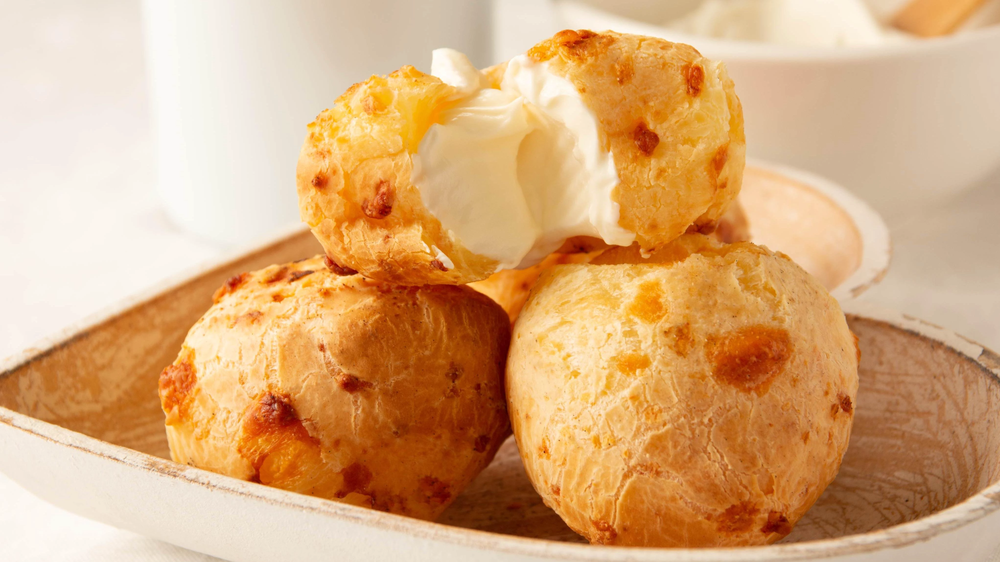

Literally translated to cheese bread, pão de queijo has its origins in the culinary inventions of African slaves, when they started to use the residue of the cassava plant. A fine white powder, or starch, was rolled into balls and baked.
Meal prep time : 20 minutes
Servings : 6-8